Physics Simulation Fundamentals#
Physics in USD Schemas#
The physics properties of assets are all well-defined using USD Physics Schemas and Physx Schemas . The documentation of Physics properties and how to access them in code is defined in C++, but you can follow these guidelines to find the equivalent calls in Python. For example, where generic names are used to represent an arbitrary API, the general usage is:
import omni.usd
from pxr import PhysxSchema, Usd, UsdGeom, UsdPhysics
stage = omni.usd.get_context().get_stage()
prim = stage.GetPrimAtPath("/Path/To/Prim")
physics_api_prim = UsdPhysics.SomePhysicsAPI(prim)
physx_api_prim = PhysxSchema.AnotherPhysxAPI(prim)
# Check if the API is Applied, if not, Apply it.
if not physics_api_prim:
physics_api_prim = UsdPhysics.SomePhysicsAPI.Apply(prim)
physics_attr = physics_api_prim.GetSomePhysicsAttr()
physx_attr = physx_api_prim.GetPhysxAttr()
# Check if Attribute is authored, otherwise create it
if not physics_attr:
physics_attr = physics_api_prim.CreateSomePhysicsAttr(1.0)
print(physics_attr.Get())
physics_attr.Set(10.0)
In some cases, you may need to have additional parameters when casting the Prim to a given API, for example, Joint State does require the joint type (“Prismatic”, or “Angular”, for instance). In these cases the C++ signature will contain a “TfToken” type. Replace it with a basic string and it should work in Python.
If you need to know the attribute name of some physics attribute you see on the UI, Hover over the attribute in the properties panel, and it will show its name in the tooltip. The attribute name standard is schema_name:attribute_name, so for example something like physics:velocity on a rigid body means it’s using the Physics Rigid Body API and the attribute name is velocity, so the corresponding attribute getter would be UsdPhysics.RigidBodyAPI(prim).GetVelocityAttr().
Simulation Timeline#
Simulation time differs from real-time. Depending on system configuration and the size of the simulated environment, each time step may be computed faster or slower than the time it’s simulating, resulting in a warped speed if results are presented sequentially (often, physics simulation in Isaac Sim is faster than real-time). To mitigate this, Isaac Sim is configured by default with a limiter to match real-time speed.
Moreover, the simulation may run at a faster pace than rendering, meaning there may be more than one simulation time-step occurring in the background for every rendered frame. In the simplified example below, the simulation is set to run at 120 time steps per second, while rendering is set to 60 frames per second, resulting in two physics steps per rendered frame:
{kind=link}
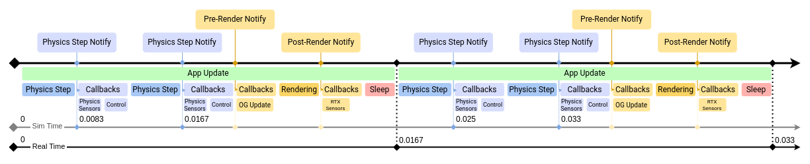
Note
The physics step time doesn’t necessarily coincide with system time (from the simulation start). In cases where the simulation can run faster than real-time, it’s possible to run an accelerated version of the simulation in a timeline without rendering or frame-rate blocking.
Ideally, simulation and rendering would match or be multiples of each other, but when this isn’t the case, each rendered frame may contain an uneven number of simulation timesteps. For example, simulation set to 100 steps per second, rendering set to 30 frames per second, resulting in most render updates having 3 simulation steps but occasionally 4 in a frame.
There are three event streams on the timeline (among a few others, but these are notably the most relevant for Isaac Sim). You can subscribe directly to Simulation Events or to Frame update events, either pre or post-rendering. OmniGraph nodes are typically updated on a pre-render event, but there are ways to set them to update on different events, such as every physics step.
Configuring Frame Rate#
The stage’s Timecodes per second can be configured by adjusting the current stage metadata. In the Layer tab, select the Root Layer, and in the properties panel modify the Timecodes per second property. Under the GUI default /app/player/useFixedTimeStepping=true, the timeline uses 1 / TimeCodesPerSecond as its per-tick dt, so this value sets the simulation’s wall-clock playback rate as well as the recorded animation rate. The physics step rate is configured separately on the Physics Scene (see Configuring Simulation Timesteps below); for the relationship between the three rates, see Architecture: Timeline, Physics, and the Renderer.
{kind=link}
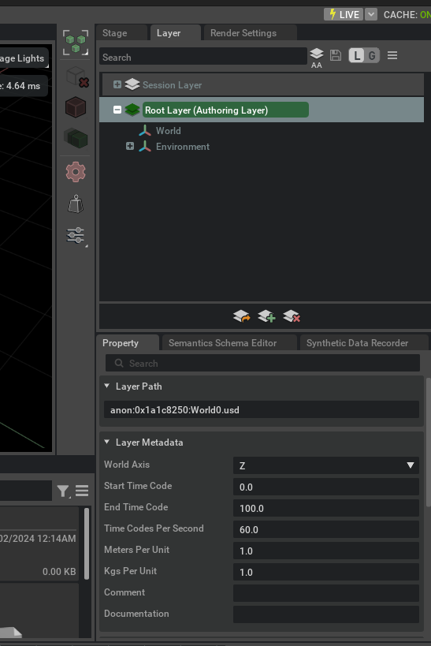
Configuring Simulation Timesteps#
Simulation steps per second are determined in the Physics Scene. If there’s no Physics scene in your stage, it uses the default value, which is 60 steps per second.
To add a Simulation Scene element:
Click on Create > Physics > Simulation Scene.
Select the Simulation scene.
In the Properties panel check the element Simulation Steps per Second.
{kind=link}
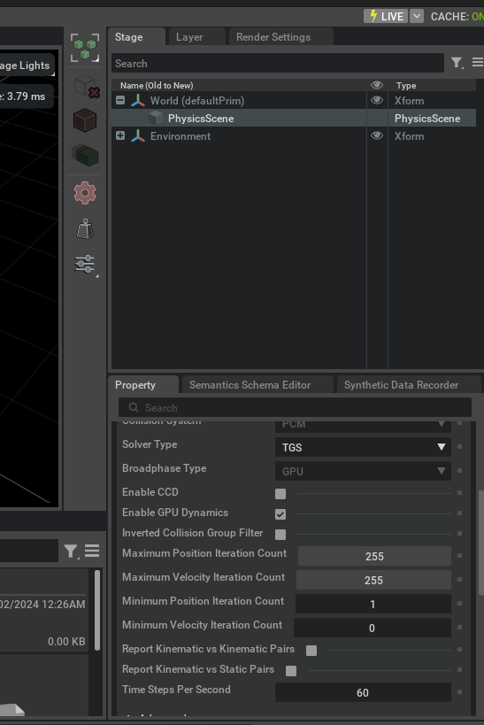
For more details on other parameters in the Physics Scene, refer to Omniverse Physics Developer Guide.
Simulation Components#
Prims in a USD stage do not have physics enabled by default, but you may add simulation properties through the UI or using Python scripts. The following creates an example scene to which elements are added as we progress through the basic physics object types.
To begin, create a new scene and add a ground plane to it: File > New, then Create > Physics > Ground Plane.
Rigid Body#
This is the most basic element. Adding rigid body dynamics enables an element to be subject to gravitational acceleration and other external forces.
1, Add a container to use as our Rigid Body: Create > Xform.
2. Move it up to Z=10 in the properties panel.
3. To make it a rigid body, right-click on it in the stage, then Add > Physics > Rigid Body.
{kind=link}
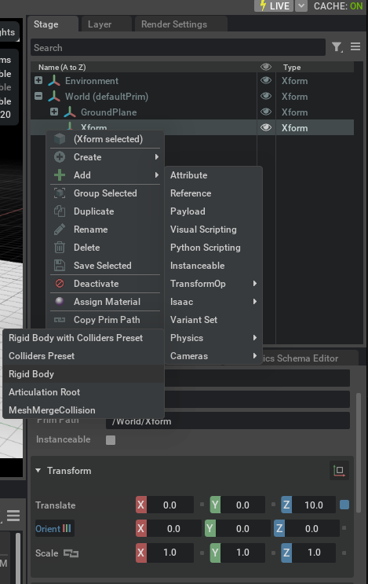
Verify that the Xform is now be a rigid body, although you may not see much because it has no visual meshes.
You can fix that by nesting a Cube in it:
Create > Mesh > Cube, and drag it into the Xform.
Ensure the cube’s Translate is set to [0,0,0.5].
{kind=link}
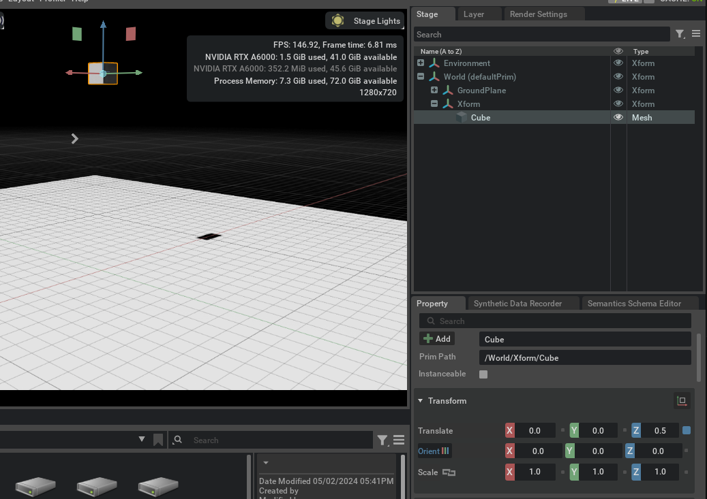
After you’ve completed the same setup as the screenshot above, hit play and see what happens:
Review the following:
Notice how the Z position gets updated as the object falls - this is because we are highlighting the rigid body directly. Try again selecting the cube, and you’ll notice that it doesn’t change.
The cube falls straight through the ground. We need to let the simulation know it needs to collide with other objects.
Colliders#
To make our rigid body collide, you must indicate to the simulation that you want it to. For that, there’s the Collider API.
Select the Cube prim, and click on the Add Button > Physics > Collider.
Run the simulation again and verify that the rigid body stops at the ground.
Colliders can also be added to non-movable objects. Let’s experiment:
Create a new cube and place it at Z=3.0.
Then change its scale to [2,2,0.01] to create a 2x2 meter platform.
Add the collider to it just like before, without adding the Rigid body.
{kind=link}
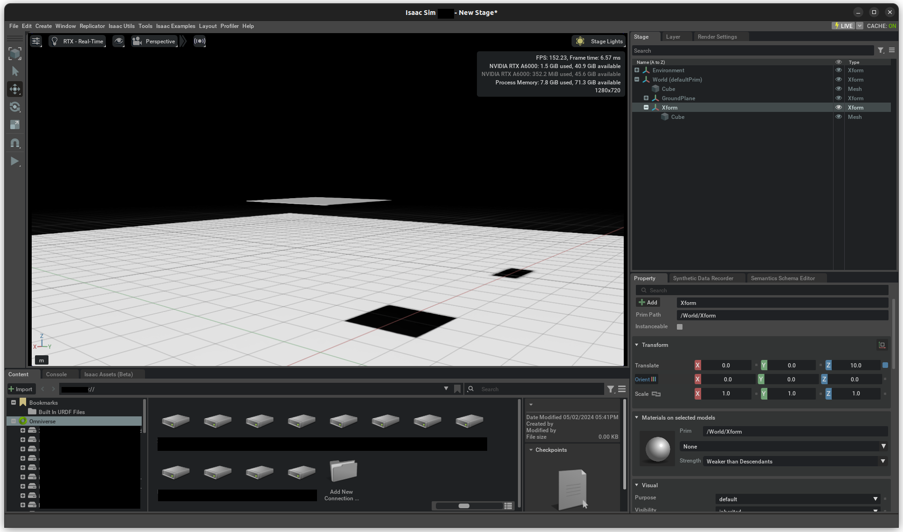
Play the simulation again, and verify that this is the result:
{kind=link}
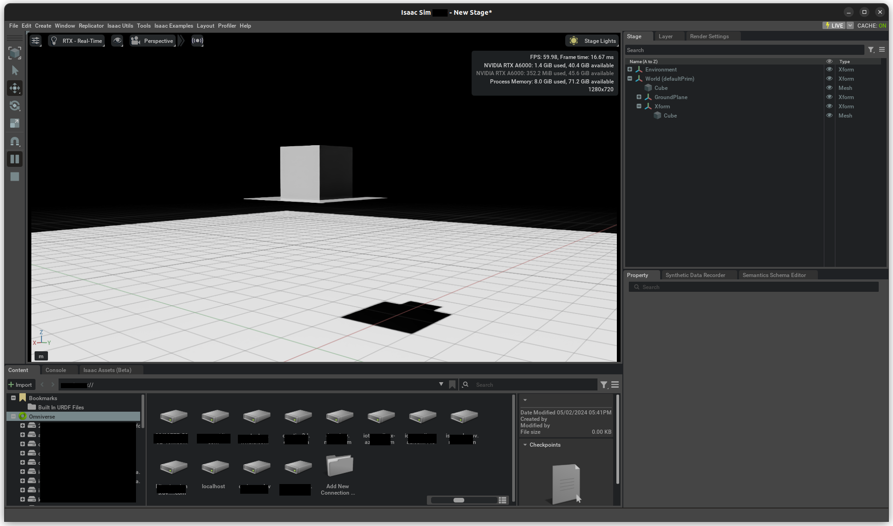
Raise the Xform position to Z=80.
Play the simulation again.
With this example, you are solving some of the common issues of physics simulation. Because time is discretized, if objects move too fast, during one time-step the object is above the platform, and in the next it has completely passed through it, with no collision captured. This doesn’t occur with the ground plane because it implements a “force field” that pushes penetrated objects towards the ground surface.
To remedy this, enable an option in the physics scene called Enable CCD (Continuous Collision Detection). CCD sweeps the object from one pose to the next. This option must also be enabled in the rigid body itself:
Select the Xform.
In the properties panel, enable CCD under the rigid body properties.
There are other ways to solve this issue, but for this scenario, this is the most effective.
Remember that collision has nothing to do with what you see on screen. For instance, you could hide the cube and the collider would behave the same, or you could add another cube or a sphere under Xform and it would have no effect unless you apply the Collision API to it.
Many object colliders are made using a composition of multiple mesh elements, giving it its shape and behavior. They work as a single rigid body even if they are physically separated on the stage, as long as they are all children of a rigid body.
Try adding and removing colliders to this rigid body or adding more rigid bodies to this scene and see how they behave.
Convex Hull#
This next experiment with colliders removes the platform you added before and returns our Xform to Z=10.
Add a Torus mesh in the place of the platform at
Z=3.0and scale it to [5.0, 5.0, 5.0].Add > Physics > Rigid Body With Colliders Preset.
Run the simulation.
The Cube sits on top of the torus hole because the default approximation for mesh geometry is a convex hull. This is an approximation that the simulation engine can process efficiently, i.e. they are a good choice for performant simulations. We will review more complex, and therefore more computationally expensive approximations below.
To see the collision shape in use:
Click on the eye icon on the top-left side of the Viewport.
Show by type > Physics > Colliders > Selected.
Verify that green lines appear on the Torus.
This is a debug view of the collision shape.
You can also view a solid display of the colliders by opening the Physics debug menu: 1. Window > Simulation > Debug. 2. In the debug window, scroll to “Collision Mesh Debug Visualization”. 3. Check “Solid Mesh Collision Visualization”. 4 Verify that when you select the torus, its shape displays solidly.
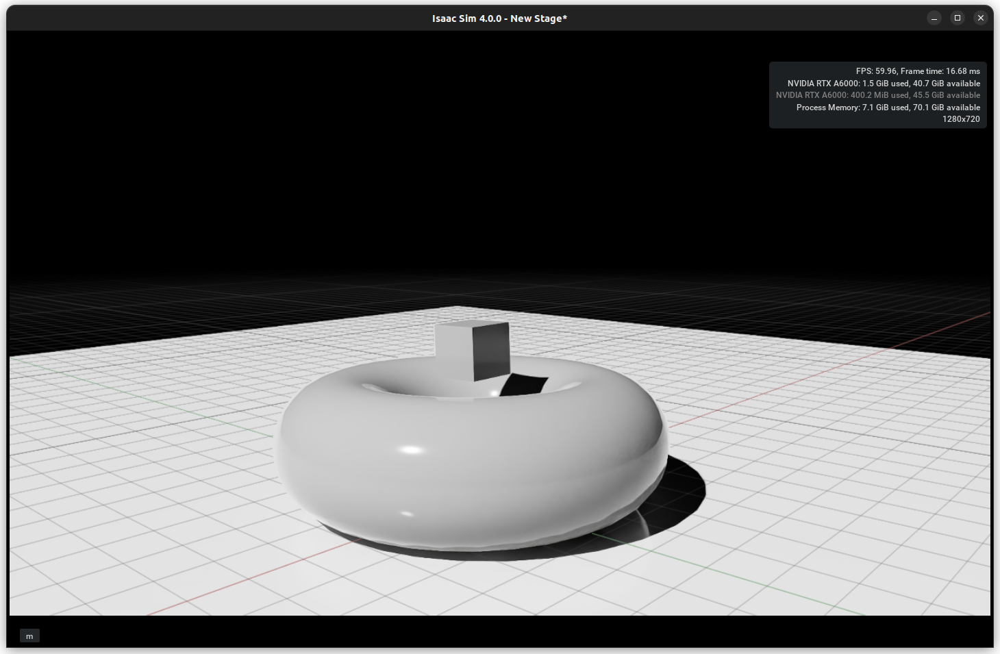 |
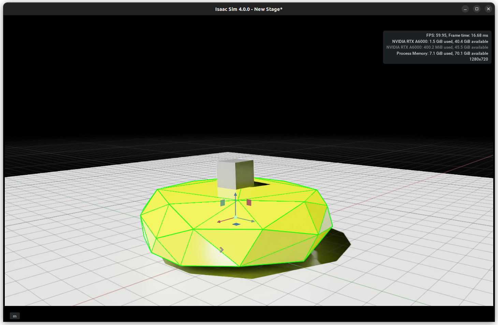 |
Convex Decomposition#
At a small expense, the torus collider can have the hole by a composition of convex shapes. This composition can be:
manually created by adding multiple shapes
computed with Physics Convex Decomposition
Select the Torus.
In the properties panel, scroll down to the Collision section, and select Convex Decomposition from the drop-down.
By opening the Advanced tab, you can adjust the parameters until you find a decomposition to your satisfaction.
Note
Fewer convex hulls typically results in higher performance.
In the Simulation Debug tab, you can also increase the Explode View distance to split the collider shapes and better understand how the composition is made.
{kind=link}
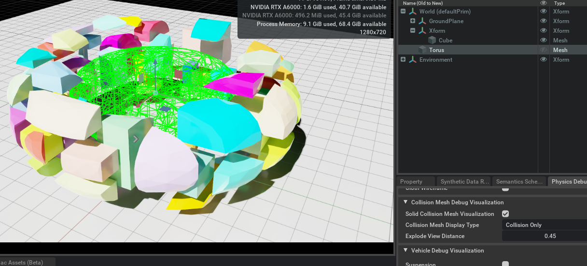
The Collider drop-down contains more options to explore, like Bounding Cube and Sphere - the cheapest collisions possible, and a mode “Sphere Approximation”, which is similar to Convex decomposition but directly uses a group of spheres instead of conforming meshes.
Note
While triangle mesh and mesh simplification are not supported by rigid bodies and fall back to convex hull, it is possible to use a triangle mesh geometry directly on a rigid body by adding a signed-distance field to it; select SDF Mesh in the approximation drop-down to do so.
For more details on Rigid Bodies and Colliders, check Rigid Body Simulation and Colliders.
Contact and Rest Offset#
In the Collider Advanced tab, there are two more parameters that can be important tuning parameters when there are collision issues, in particular with small and thin objects.
The Rest Offset can be tuned to inflate or shrink the collision geometry set; it can be useful to adjust in cases where the visual mesh is larger or smaller than the collision geometry so that the collision locations are consistent with the visual representation.
The Contact Offset dictates how far from the collision geometry, irrespective of Rest Offset, the simulation engine starts generating contact constraints. The tradeoff for tuning the contact offset is performance vs. collision fidelity: A larger Contact Offset results in many contact constraints being generated which is more computationally expensive; a smaller offset can result in issues with contacts being detected too late, and symptoms include jittering or missed contacts or even tunneling (see notes on CCD above).
Contacts and Friction#
Besides making sure that object do not interpenetrate, collisions can transfer or dissipate energy as modeled by restitution and friction.
The parameters for the contact model are available in Physics materials. To create a Physics material:
Go to Create > Physics > Physics Material.
Select Rigid Body Material.
Physics materials are typically assigned to Collider Geometry but behave analogous to USD render materials otherwise; see Physics Materials for a full explanation of USD material resolution logic. For example, you may assign different materials to different collision geometry of a rigid body, or you may assign a material to the rigid body prim and configure it to override any materials set on the collider children.
To assign a physics material:
Select the collider prim.
Scroll to the Collider settings.
In Physics Materials on Selected Models, select the desired material. The list only allows picking materials that have physics properties.
Note that you may also add a physics material to a render material with “Add” > Physics > Rigid Body Material and assign the material in the render material section; the physics properties will be picked up.
Compliant Contacts#
You may configure the rigid material to produce compliant (i.e. spring-damper) contact dynamics in the Advanced tab. This may be useful for approximating deformable bodies with rigid bodies.
Combine Modes#
Because contacts are an interaction between two bodies, each contact parameter is not enough to describe how this interaction plays out. Just like in the real world, one surface material property may dominate the interaction or they may seamlessly combine into an average value. To replicate that, friction, restitution, and compliant-contact damping have a configurable combine mode field. Because both sides of the contact have this combine mode, the precedence of the combine mode matters:
The lower in the drop-down, the lower the priority of a mode in a combine mismatch resolution; so average < min < multiply < max.
For example, if Collider A has a friction combine mode average while Collider B has min, their interaction resolves as the minimum friction between the two. If a body C with combine mode max contacts A and B, the friction between A and C are resolved with max, as well as B and C.
Joints#
Robots are typically composed of multiple jointed rigid bodies. Joints create constraints between two bodies. In the following, you use a Revolute Joint, but the steps are similar for other joint types, see a list in Joints.
You must configure the relative pose of the joint frames for each body to be jointed. Find more details, in particular the local scaling aspect of joint frames in the Joint Frames Section.
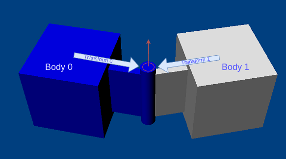
Note that when creating a joint through the UI, the joint’s frames are set to match the pose of the second rigid body selected for the creation.
Now create a joint as follows:
Select first the Xform rigid body, and then the Torus rigid body.
Go to Create > Physics > Joints > (Joint Type).
For this tutorial, use the Revolute Joint type. Because the Torus was selected second, the joint is at its center.
You will notice a circle on-screen, representing the origin and range of motion for the joint. If you start the simulation now, the Torus and Cube fall together. When the torus hits the ground, the cube stops moving. It’s in a stable position, but if you nudge it, it moves down in a circular pattern. Interact with the cube by pressing shift and left-clicking the cube.
Check the properties panel and review the following attributes:
{kind=link}
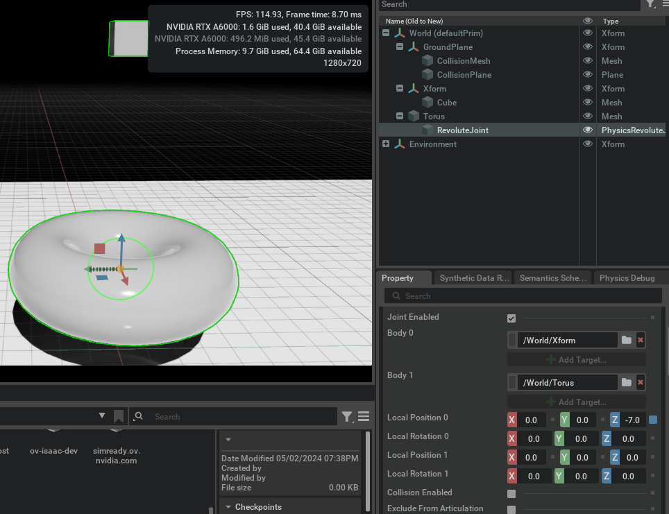
Body 0: /World/XForm
Body 1: /World/Torus
These are the Poses relative to the bodies. You will notice that Position 0 is Z=-7.0.
Position 0:
[0, 0, -7.0]Rotation 0:
[0, 0, 0.0]Position 1:
[0, 0, 0.0]Rotation 1:
[0, 0, 0.0]
Note
When setting up joints that are part of an articulation, make sure that Body 0 will be the parent of Body 1 in the articulation-tree hierarchy. This way, joint-related quantities like link incoming joint forces or joint drive targets have a one-to-one correspondence in the PhysX SDK and USD.
Joint Axis#
A revolute joint provides one degree of freedom and you may choose what axis of the joint frames is free. By default, the X axis is selected. You can change that in Properties, under the Revolute Joint section.
Joint Limits#
The joint limits determine how far the joint can move from its original position. By default, when a joint is created, it comes without limits. With the joint selected, scroll down in the Properties panel and modify the Lower Limit and Upper Limit under the Revolute Joint section. Remember that USD uses degrees, not radians to represent angles.
Adding a Joint Drive#
You may control the position and velocity of the degree of freedom that the joint added using a Joint Drive. You can do that by clicking the Add Button > Physics > Angular Drive. For details on configuring a joint drive, refer to Tutorial 11: Tuning Joint Drive Gains.
Articulation#
An articulation is an optimized simulation structure for jointed bodies that provides superior performance, fidelity, and features for robotics. There are some limitations regarding topology (loop-closing) and joint support, which you can learn about in Articulations. For a complete guide in tuning articulations, refer to Articulation Stability Guide.
For overall Simulation Hints and FAQ, refer to Physx Simulation Hints and FAQ.
Stepping an OmniGraph with Physics#
To guarantee one graph step per physics step at the moment it happens, you must use a modified version of an OmniGraph.
Create a new Action Graph through Create > Visual Scripting > Action Graph.
Select the created graph on the stage and in the Raw USD Properties section, in the pipeline stage, select PipelineStageOnDemand.
On the Action Graph window, search for On Physics Step. Drag and Drop it on your OmniGraph.
Continue your OmniGraph as usual.
{kind=link}
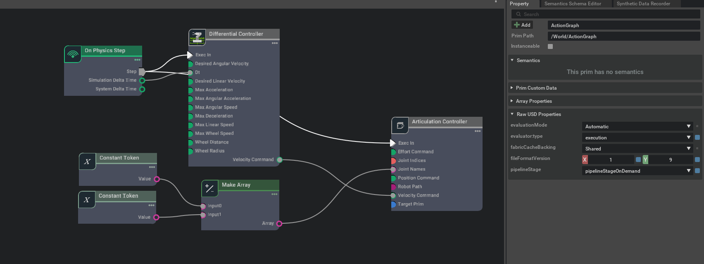